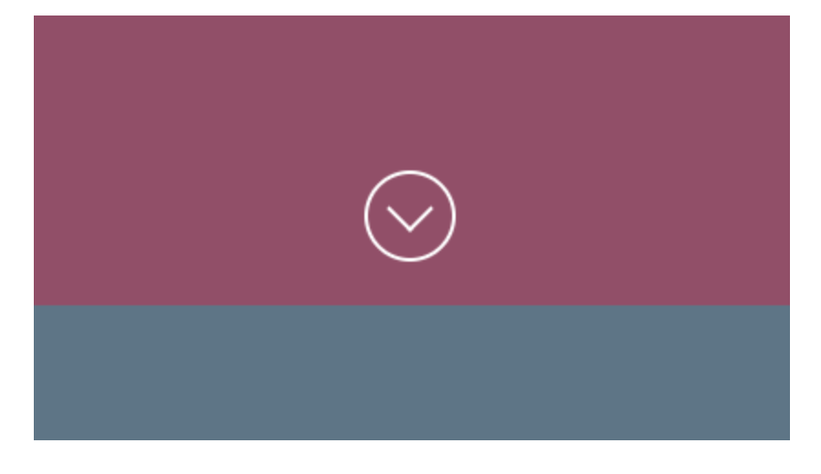

Exemplul care va ilustra utilizarea abordărilor prezentate în această lecţie se va referi la crearea săgeţii pentru derularea în jos. Este vorba de funcţionalitatea pe care o deţin aproape toate site-urile moderne, în special dacă este vorba de site-urile cu one page design. Săgeata pentru derularea în jos (scroll down), se află, de obicei, în josul secţiunii iniţiale a paginii web, ea având două scopuri principale şi anume:
Deşi o săgeată pentru derularea în jos se poate crea în foarte multe moduri, printre care în special utilizarea imaginilor png sau a vectorilor pentru reprezentarea săgeţii, în continuare o vom crea folosind exclusiv elementele HTML simple. Efectul care va fi obţinut în cele din urmă, este ilustrat în imaginea de mai jos
Ca să realizăm acest exemplu, pe lângă diferitele tehnici descrise în această lecţie, vom folosi şi pseudo-elementele descrise în modulul anterior al acestui curs.
Structura HTML cu care vom prezenta săgeata pentru derularea în jos este următoarea:
<a id="scroll-down-arrow" href="#next-section"></a>
După cum puteţi vedea, săgeata pentru derularea în jos este realizată cu ajutorul unui singur element a. Aplicând o stilizare specială, acest element obţine un aspect ca în imaginea 5.11. (cercul în cadrul căruia se află săgeata care indică în jos).
#scroll-down-arrow {
position: absolute;
bottom: 24px;
width: 46px;
height: 46px;
margin: 0 auto;
left: 0;
right: 0;
border: 2px solid #fff;
border-radius: 100%;
}
#scroll-down-arrow::before {
position: absolute;
content: '';
width: 16px;
height: 16px;
left: 0;
right: 0;
top: 10px;
margin: 0 auto;
border-left: 2px solid #fff;
border-bottom: 2px solid #fff;
transform: rotate(-45deg);
}
Analizând stilizarea prezentată, concluzionăm următoarele:
Acesta este un exemplu ideal care, pe lângă transformări, ilustrează adevărata putere a pseudo-elementelor. Acestea se folosesc adesea pentru efectuarea acestora şi a altor operaţii similare în timpul stilizării. Pe lângă aceasta, ne referim şi la crearea unui element vizual suplimentar, care nu se poate obţine în niciun alt mod prin stilizarea elementului propriu-zis. Pseudo-elementul din exemplu nu are niciun conţinut text, dar pentru a fi afişat pe pagină, trebuie să definim valoarea atributului content. Tocmai de aceea, acest atribut din exemplu deţine aşa-numita valoare goală, care se obţine punând apostrofurile între care nu se specifică nimic ('').
Săgeata care se poate vedea în cadrul cercului elementului scroll down este, de fapt, obţinută prin setarea cadrului din stânga şi dreapta pseudo-elementului. Apoi, un astfel de pseudo-element, cu două cadre vizibile, este rotit cu -45 de grade, pentru ca săgeata să se orienteze în jos.